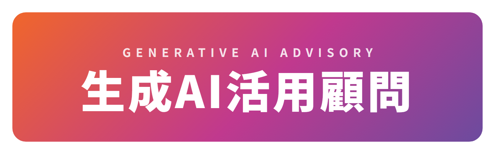
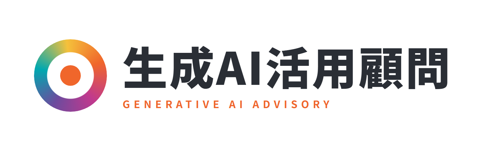
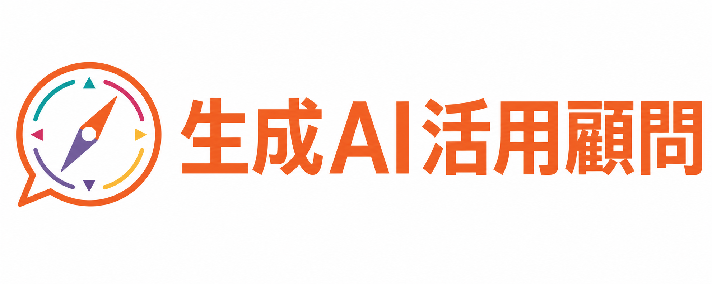

オレンジ→マゼンタ→パープルのグラデーションバッジ。サイト下部のCTA帯と同じ色の流れで、ページ全体との統一感が強い。

コミクスのレインボーロゴと同じ「多色の環」モチーフ。bond・アカデミー・デジパラと同じワードマーク型で、カードの並びが揃う。

「経営の羅針盤との対話」を表すシンボル付き。オレンジのワードマークで親しみ・伴走感が強い。

AI脳チップのアイコン付きバッジ型。生成AI活用支援パックの紺バナーロゴと兄弟のような親和性。